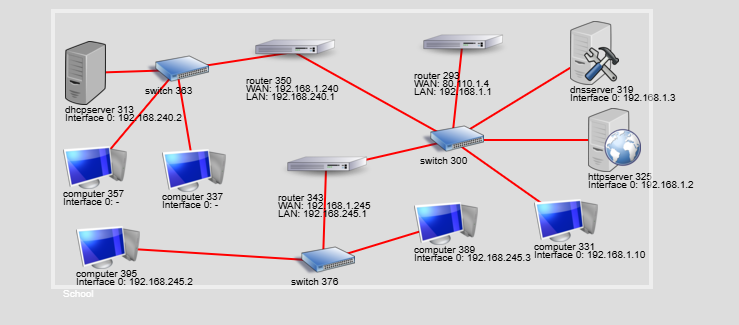

Home
Just a website to host materials for class.
Course Book
You can purchase the book from anywhere. CompTIA Network+ N10-008 Exam Cram 7th Edition ISBN:9780137375769
Network Simulator
Network Simulator LinkThis project aims to provide secondary schools with a simulator in which students can practice and understand, among others, the following concepts:
Basic networking components: hosts (clients and servers), routers and switches.
The Network Simulator was created by: Jorge García Ochoa de Aspuru.
